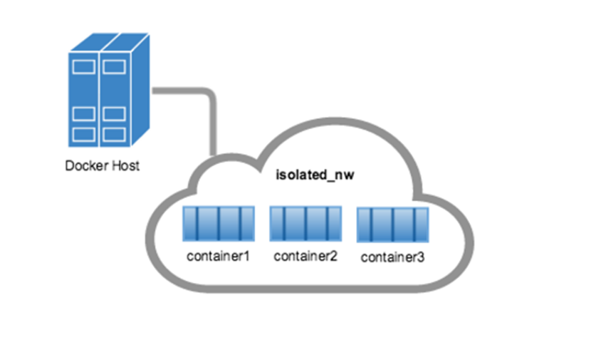
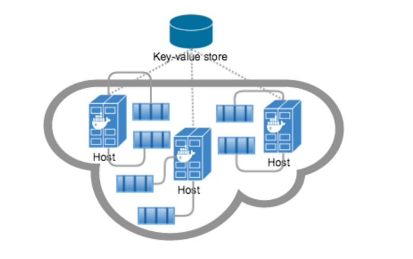

Bridge
docker network ls commanddocker0 bridgestudent@dockerhost:~$ docker network ls NETWORK ID NAME DRIVER d1dc8ce401a4 bridge bridge 123297c4b101 none null ec95beed1ab7 host host

docker0 network (the default bridge network we’ve seen)Also known as a multi-host network


etcd or consulUCP installation uses etcd